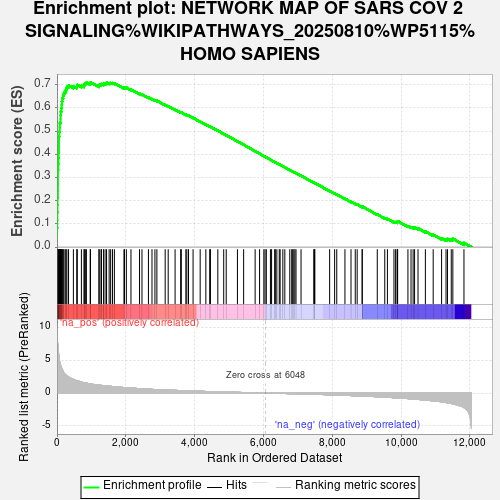
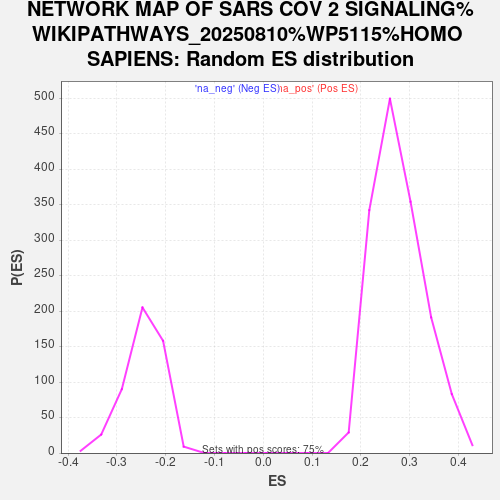

| Dataset | NHBE_SARSCoV2_ranks |
| Phenotype | NoPhenotypeAvailable |
| Upregulated in class | na_pos |
| GeneSet | NETWORK MAP OF SARS COV 2 SIGNALING%WIKIPATHWAYS_20250810%WP5115%HOMO SAPIENS |
| Enrichment Score (ES) | 0.71110266 |
| Normalized Enrichment Score (NES) | 2.5643203 |
| Nominal p-value | 0.0 |
| FDR q-value | 0.0 |
| FWER p-Value | 0.0 |

| SYMBOL | RANK IN GENE LIST | RANK METRIC SCORE | RUNNING ES | CORE ENRICHMENT | |
|---|---|---|---|---|---|
| 1 | SAA2 | 0 | 10.517 | 0.0427 | Yes |
| 2 | CCL20 | 1 | 9.951 | 0.0830 | Yes |
| 3 | CXCL1 | 8 | 8.326 | 0.1163 | Yes |
| 4 | SAA1 | 10 | 8.245 | 0.1497 | Yes |
| 5 | IRF9 | 14 | 8.003 | 0.1819 | Yes |
| 6 | CXCL5 | 16 | 7.874 | 0.2137 | Yes |
| 7 | IFI27 | 25 | 7.449 | 0.2433 | Yes |
| 8 | IL6 | 26 | 7.388 | 0.2732 | Yes |
| 9 | MX1 | 27 | 7.363 | 0.3031 | Yes |
| 10 | IL1B | 28 | 7.157 | 0.3321 | Yes |
| 11 | OAS2 | 36 | 6.847 | 0.3593 | Yes |
| 12 | NFKB2 | 43 | 6.386 | 0.3847 | Yes |
| 13 | CXCL2 | 49 | 6.003 | 0.4087 | Yes |
| 14 | CXCL3 | 55 | 5.749 | 0.4316 | Yes |
| 15 | IFITM1 | 56 | 5.709 | 0.4547 | Yes |
| 16 | IL1A | 57 | 5.543 | 0.4772 | Yes |
| 17 | IFI6 | 68 | 5.210 | 0.4975 | Yes |
| 18 | TNF | 80 | 4.793 | 0.5160 | Yes |
| 19 | IFI44L | 82 | 4.756 | 0.5352 | Yes |
| 20 | STAT1 | 103 | 4.281 | 0.5509 | Yes |
| 21 | IFIH1 | 104 | 4.266 | 0.5682 | Yes |
| 22 | IFITM3 | 108 | 4.218 | 0.5851 | Yes |
| 23 | BST2 | 128 | 3.944 | 0.5995 | Yes |
| 24 | CXCL16 | 138 | 3.785 | 0.6141 | Yes |
| 25 | CXCL6 | 143 | 3.694 | 0.6287 | Yes |
| 26 | FAM83A | 155 | 3.575 | 0.6423 | Yes |
| 27 | TRAF3 | 179 | 3.362 | 0.6540 | Yes |
| 28 | PTGS2 | 199 | 3.083 | 0.6649 | Yes |
| 29 | NLRP1 | 237 | 2.836 | 0.6733 | Yes |
| 30 | IFIT1 | 262 | 2.734 | 0.6824 | Yes |
| 31 | C1S | 287 | 2.632 | 0.6910 | Yes |
| 32 | C1R | 335 | 2.448 | 0.6970 | Yes |
| 33 | IL33 | 476 | 2.098 | 0.6938 | Yes |
| 34 | WDR74 | 575 | 1.885 | 0.6932 | Yes |
| 35 | CEBPB | 589 | 1.855 | 0.6996 | Yes |
| 36 | LGALS3BP | 709 | 1.679 | 0.6964 | Yes |
| 37 | TGFBR2 | 786 | 1.578 | 0.6964 | Yes |
| 38 | TRAF2 | 793 | 1.572 | 0.7023 | Yes |
| 39 | RAC1 | 824 | 1.533 | 0.7060 | Yes |
| 40 | FYN | 854 | 1.502 | 0.7097 | Yes |
| 41 | MYD88 | 965 | 1.393 | 0.7061 | Yes |
| 42 | VPS18 | 973 | 1.383 | 0.7111 | Yes |
| 43 | MTOR | 1219 | 1.197 | 0.6954 | No |
| 44 | LARP1 | 1225 | 1.194 | 0.6998 | No |
| 45 | TP53I3 | 1278 | 1.166 | 0.7002 | No |
| 46 | MMP25 | 1293 | 1.160 | 0.7037 | No |
| 47 | MLST8 | 1357 | 1.126 | 0.7030 | No |
| 48 | SIGMAR1 | 1360 | 1.125 | 0.7074 | No |
| 49 | IKBKG | 1423 | 1.083 | 0.7065 | No |
| 50 | ACTG1 | 1440 | 1.075 | 0.7096 | No |
| 51 | RRAS | 1515 | 1.042 | 0.7076 | No |
| 52 | ACE2 | 1559 | 1.019 | 0.7081 | No |
| 53 | JAK1 | 1612 | 0.992 | 0.7077 | No |
| 54 | SDF2 | 1667 | 0.957 | 0.7071 | No |
| 55 | FOS | 1946 | 0.835 | 0.6871 | No |
| 56 | CTSZ | 1961 | 0.829 | 0.6893 | No |
| 57 | IRAK1 | 2015 | 0.807 | 0.6881 | No |
| 58 | PRKCQ | 2149 | 0.752 | 0.6800 | No |
| 59 | JUN | 2398 | 0.668 | 0.6619 | No |
| 60 | PITRM1 | 2469 | 0.645 | 0.6586 | No |
| 61 | AKT1S1 | 2657 | 0.583 | 0.6453 | No |
| 62 | ITIH4 | 2760 | 0.556 | 0.6389 | No |
| 63 | MDN1 | 2845 | 0.533 | 0.6341 | No |
| 64 | PARP2 | 2902 | 0.518 | 0.6315 | No |
| 65 | CARD11 | 3143 | 0.465 | 0.6132 | No |
| 66 | APOL1 | 3231 | 0.449 | 0.6077 | No |
| 67 | GTF2F2 | 3431 | 0.404 | 0.5926 | No |
| 68 | RPS6 | 3593 | 0.371 | 0.5806 | No |
| 69 | FAM98A | 3612 | 0.368 | 0.5806 | No |
| 70 | RPTOR | 3744 | 0.340 | 0.5709 | No |
| 71 | RRM2 | 3773 | 0.335 | 0.5699 | No |
| 72 | ATE1 | 3821 | 0.327 | 0.5673 | No |
| 73 | CD226 | 3954 | 0.303 | 0.5575 | No |
| 74 | TBKBP1 | 4160 | 0.265 | 0.5413 | No |
| 75 | SRP19 | 4325 | 0.237 | 0.5285 | No |
| 76 | MAVS | 4437 | 0.222 | 0.5201 | No |
| 77 | EIF4EBP1 | 4459 | 0.219 | 0.5192 | No |
| 78 | CASP8 | 4673 | 0.185 | 0.5020 | No |
| 79 | C1QBP | 4844 | 0.160 | 0.4884 | No |
| 80 | MOV10 | 4917 | 0.147 | 0.4830 | No |
| 81 | BIRC5 | 5243 | 0.102 | 0.4561 | No |
| 82 | APOC1 | 5423 | 0.076 | 0.4413 | No |
| 83 | OS9 | 5757 | 0.033 | 0.4135 | No |
| 84 | IRF3 | 5886 | 0.017 | 0.4028 | No |
| 85 | TLE3 | 6010 | 0.004 | 0.3925 | No |
| 86 | TRAF6 | 6045 | 0.000 | 0.3896 | No |
| 87 | TBK1 | 6083 | -0.004 | 0.3865 | No |
| 88 | CASP9 | 6202 | -0.018 | 0.3767 | No |
| 89 | INTS4 | 6235 | -0.022 | 0.3741 | No |
| 90 | ATP13A3 | 6325 | -0.034 | 0.3668 | No |
| 91 | JUNB | 6344 | -0.035 | 0.3654 | No |
| 92 | MAPK8 | 6388 | -0.041 | 0.3620 | No |
| 93 | VPS16 | 6458 | -0.048 | 0.3564 | No |
| 94 | HIF1A | 6483 | -0.052 | 0.3545 | No |
| 95 | FGF2 | 6562 | -0.062 | 0.3482 | No |
| 96 | GABARAPL2 | 6620 | -0.070 | 0.3437 | No |
| 97 | CCL26 | 6764 | -0.089 | 0.3321 | No |
| 98 | PIAS1 | 6820 | -0.095 | 0.3279 | No |
| 99 | GGH | 6848 | -0.099 | 0.3260 | No |
| 100 | ULK1 | 6881 | -0.104 | 0.3237 | No |
| 101 | CCL5 | 6912 | -0.108 | 0.3216 | No |
| 102 | CLCC1 | 6945 | -0.113 | 0.3194 | No |
| 103 | SMAD1 | 7091 | -0.130 | 0.3078 | No |
| 104 | RHEB | 7460 | -0.184 | 0.2776 | No |
| 105 | CASP3 | 7484 | -0.188 | 0.2764 | No |
| 106 | EGR1 | 7491 | -0.189 | 0.2767 | No |
| 107 | ADAM9 | 7922 | -0.261 | 0.2416 | No |
| 108 | PTPN6 | 8067 | -0.289 | 0.2307 | No |
| 109 | GTSE1 | 8129 | -0.302 | 0.2268 | No |
| 110 | VPS11 | 8367 | -0.351 | 0.2083 | No |
| 111 | ITCH | 8543 | -0.385 | 0.1952 | No |
| 112 | DEPTOR | 8666 | -0.413 | 0.1866 | No |
| 113 | STEAP3 | 8722 | -0.424 | 0.1837 | No |
| 114 | EIF4A2 | 8868 | -0.455 | 0.1733 | No |
| 115 | CFH | 8869 | -0.455 | 0.1752 | No |
| 116 | TNFSF10 | 9306 | -0.562 | 0.1408 | No |
| 117 | EIF4E | 9524 | -0.628 | 0.1252 | No |
| 118 | MIB1 | 9601 | -0.648 | 0.1214 | No |
| 119 | NEK9 | 9791 | -0.709 | 0.1084 | No |
| 120 | SRP54 | 9839 | -0.722 | 0.1074 | No |
| 121 | IL18 | 9884 | -0.736 | 0.1067 | No |
| 122 | VPS33A | 9891 | -0.738 | 0.1092 | No |
| 123 | VPS36 | 9898 | -0.740 | 0.1117 | No |
| 124 | VPS41 | 10197 | -0.846 | 0.0900 | No |
| 125 | G3BP2 | 10287 | -0.889 | 0.0862 | No |
| 126 | RTN4 | 10348 | -0.916 | 0.0849 | No |
| 127 | AHR | 10390 | -0.931 | 0.0852 | No |
| 128 | DDIT4 | 10490 | -0.970 | 0.0808 | No |
| 129 | NFATC3 | 10704 | -1.071 | 0.0673 | No |
| 130 | CFI | 10931 | -1.193 | 0.0531 | No |
| 131 | CCNB2 | 11175 | -1.340 | 0.0381 | No |
| 132 | PMPCB | 11304 | -1.447 | 0.0332 | No |
| 133 | IL16 | 11346 | -1.477 | 0.0358 | No |
| 134 | TRIM59 | 11456 | -1.592 | 0.0331 | No |
| 135 | CCNB1 | 11502 | -1.639 | 0.0360 | No |
| 136 | APOD | 11825 | -2.217 | 0.0179 | No |
